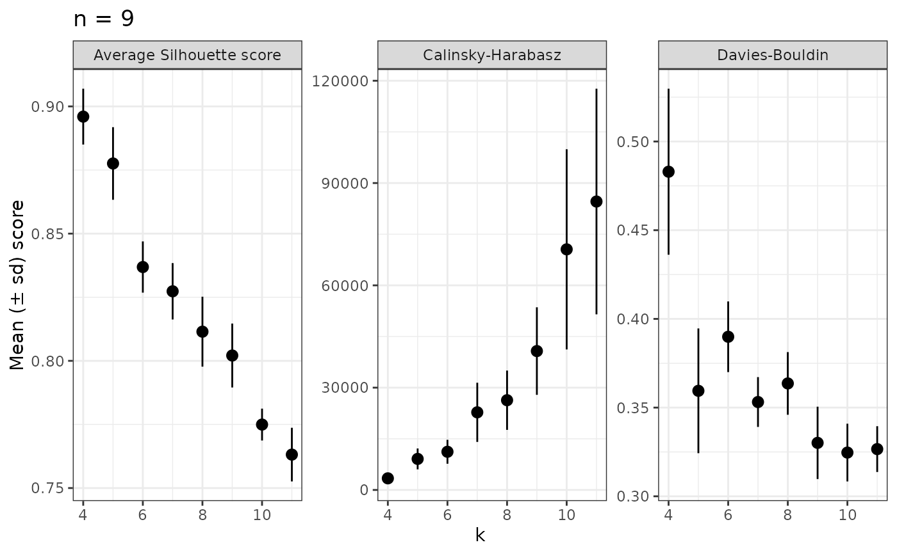

Evaluate k from all samples in a dataset
evaluate_k.RdThis function extends evaluate_sample_k() for any number of samples in a dataset.
Usage
evaluate_k(
data,
range = 3:10,
samples_col = "Sample",
abundance_col = "Abundance",
with_plot = FALSE,
...
)Arguments
- data
a data.frame with, at least, the classification, abundance and sample information for each phylogenetic unit.
- range
The range of values of k to test, default is from 3 to 10.
- samples_col
String with name of column with sample names.
- abundance_col
string with name of column with abundance values. Default is "Abundance".
- with_plot
If FALSE (default) returns a vector, but if TRUE will return a plot with the scores.
- ...
Extra arguments.
Details
The plot option (with_plot = TRUE) provides centrality metrics for all samples used.
For more details on indices calculation, please see the documentation for evaluate_sample_k(), check_DB(),
check_CH() and check_avgSil().
Examples
library(dplyr)
#
evaluate_k(nice_tidy)
#> # A tibble: 72 × 6
#> # Groups: Sample [9]
#> Sample data DB CH average_Silhouette k
#> <chr> <list> <dbl> <dbl> <dbl> <int>
#> 1 ERR2044662 <tibble [187 × 10]> 0.372 1821. 0.952 3
#> 2 ERR2044662 <tibble [187 × 10]> 0.527 2055. 0.882 4
#> 3 ERR2044662 <tibble [187 × 10]> 0.413 4934. 0.856 5
#> 4 ERR2044662 <tibble [187 × 10]> 0.429 5465. 0.840 6
#> 5 ERR2044662 <tibble [187 × 10]> 0.335 17589. 0.848 7
#> 6 ERR2044662 <tibble [187 × 10]> 0.389 17180. 0.784 8
#> 7 ERR2044662 <tibble [187 × 10]> 0.395 18083. 0.774 9
#> 8 ERR2044662 <tibble [187 × 10]> 0.329 30332. 0.770 10
#> 9 ERR2044663 <tibble [220 × 10]> 0.391 1491. 0.955 3
#> 10 ERR2044663 <tibble [220 × 10]> 0.516 1495. 0.891 4
#> # ℹ 62 more rows
# To make simple plot
evaluate_k(nice_tidy, range = 4:11, with_plot =TRUE)
#> No summary function supplied, defaulting to `mean_se()`
#> No summary function supplied, defaulting to `mean_se()`
#> No summary function supplied, defaulting to `mean_se()`
